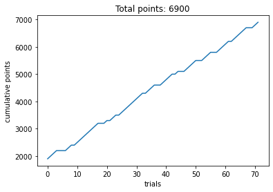
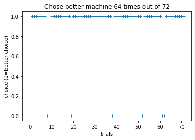
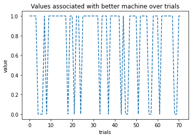
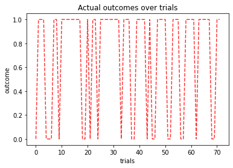
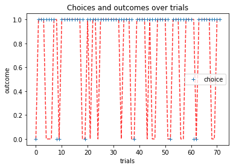

Contents
id_num = '00' # this is the only line of code you need to change
import pandas as pd
import numpy as np
import matplotlib.pyplot as plt
%matplotlib inline
datafile = f'https://raw.githubusercontent.com/shawnrhoads/gu-psyc-347/master/docs/tasks/two-armed-bandit/data/sub-{id_num}_task-two-armed-bandit.csv'
df = pd.read_csv(datafile)
display(df.head())
| subject | type | condition | goal | block | block_num | block_instr_text | trial_num | stim_0 | stim_0_value | ... | outcomeDescr | outcome | feedback_text.started | feedback_text.stopped | participant | date | expName | psychopyVersion | frameRate | Unnamed: 60 | |
|---|---|---|---|---|---|---|---|---|---|---|---|---|---|---|---|---|---|---|---|---|---|
| 0 | 0 | 0 | self | win | self_win | 1 | Play to WIN points | 0 | stimuli/slot1_up.jpg | 1 | ... | self avoid win | 0 | 105.138390 | None | 0 | 2021_Mar_01_2315 | two-armed-bandit | 2021.1.0 | 60.000312 | NaN |
| 1 | 0 | 0 | self | win | self_win | 1 | Play to WIN points | 1 | stimuli/slot1_up.jpg | 1 | ... | self win | 1 | 108.754971 | None | 0 | 2021_Mar_01_2315 | two-armed-bandit | 2021.1.0 | 60.000312 | NaN |
| 2 | 0 | 0 | self | win | self_win | 1 | Play to WIN points | 2 | stimuli/slot1_up.jpg | 1 | ... | self win | 1 | 112.338230 | None | 0 | 2021_Mar_01_2315 | two-armed-bandit | 2021.1.0 | 60.000312 | NaN |
| 3 | 0 | 0 | self | win | self_win | 1 | Play to WIN points | 3 | stimuli/slot1_up.jpg | 1 | ... | self win | 1 | 115.921452 | None | 0 | 2021_Mar_01_2315 | two-armed-bandit | 2021.1.0 | 60.000312 | NaN |
| 4 | 0 | 0 | self | win | self_win | 1 | Play to WIN points | 4 | stimuli/slot1_up.jpg | 0 | ... | self avoid win | 0 | 119.421379 | None | 0 | 2021_Mar_01_2315 | two-armed-bandit | 2021.1.0 | 60.000312 | NaN |
5 rows × 61 columns
# points over trials
plt.plot(df['trial_num'], df['cumulativePts_self'])
plt.xlabel('trials')
plt.ylabel('cumulative points')
plt.title(f'Total points: {df.cumulativePts_self.values[-1]}')
plt.show()

# compute which machine yielded rewards more frequently
if df['stim_0_value'].mean() > df['stim_1_value'].mean():
better_machine = 'stim_0'
better_machine_val = 'stim_0_value'
better_machine_choice = 'chosen_stim_0'
else:
better_machine = 'stim_1'
better_machine_val = 'stim_1_value'
better_machine_choice = 'chosen_stim_1'
# plot choices for this machine
plt.plot(df['trial_num'], df[better_machine_choice], '+')
plt.xlabel('trials')
plt.ylabel('choice (1=better choice)')
plt.title(f'Chose better machine {df[better_machine_choice].sum()} times out of {len(df[better_machine_choice])}')
plt.show()

# plot values for this machine
plt.plot(df['trial_num'], df[better_machine_val], '--')
plt.xlabel('trials')
plt.ylabel('value')
plt.title(f'Values associated with better machine over trials')
plt.show()

plt.plot(df['trial_num'], df['outcome'], 'r--', alpha=.8)
plt.xlabel('trials')
plt.ylabel('outcome')
plt.title(f'Actual outcomes over trials')
plt.show()

plt.plot(df['trial_num'], df['outcome'], 'r--', alpha=.8)
plt.plot(df['trial_num'], df[better_machine_choice], '+', label='choice')
plt.xlabel('trials')
plt.ylabel('outcome')
plt.title(f'Choices and outcomes over trials')
plt.legend()
plt.show()
